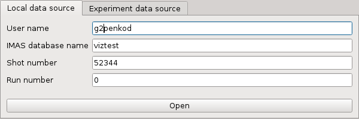
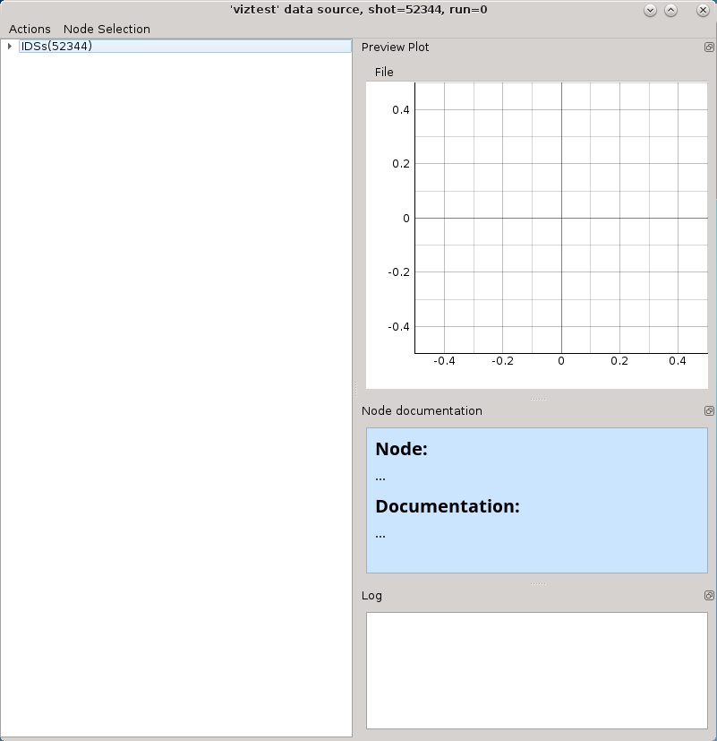
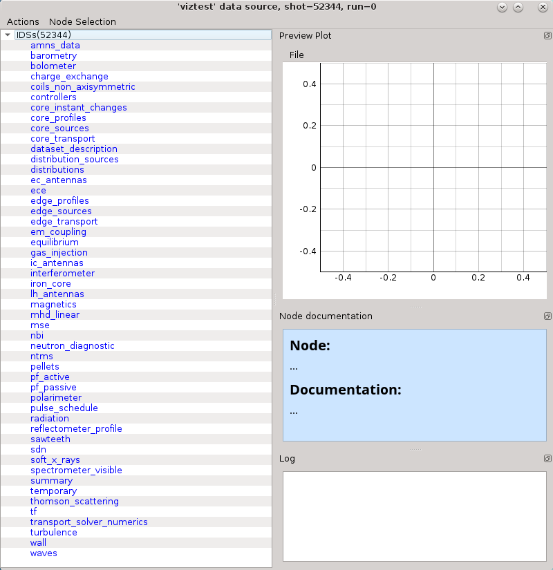
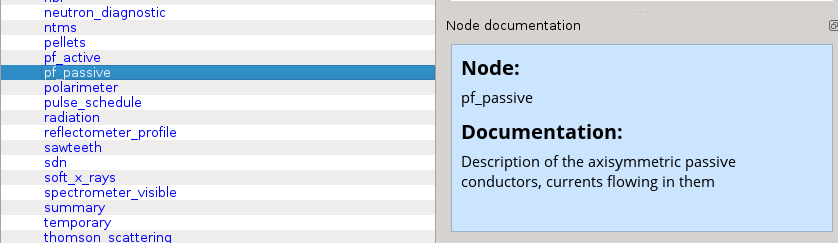
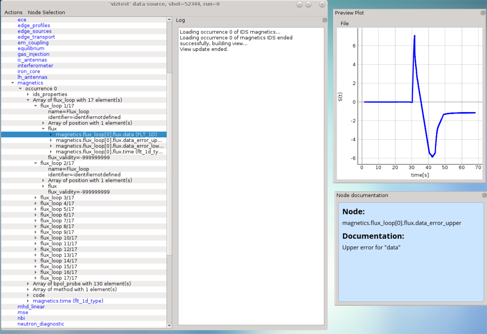
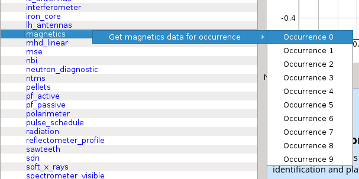

2.2. Loading IDS from IMAS local data source¶
This section describes and demonstrates how to load the IMAS IDS case within IMASViz and open one of the IDS nodes.
Note
The procedure below is executed on the GateWay HPC and thus the IMAS IDS cases available on the GateWay are used.
2.2.1. Loading IMAS IDS¶
The procedure to load the IDS is as follows:
In the main IMASViz GUI, select the first tab - Local data source.
Enter the following parameters, listed below, to the appropriate text fields.
IMAS IDS case |
|
|---|---|
Parameters |
Values |
User name |
g2penkod |
IMAS database name |
viztest |
Shot number |
52344 |
Run number |
0 |
By default, the data source is a pulse file located in
$HOME/public/imasdb/<IMAS database name>/3/0/ directory. In this
case, the ~public/imasdb/viztest/3/0/ directory of user g2penkod.
The filled GUI should then look as shown in the next figure:
{kind=link}
2.2.2. Open IDS¶
The procedure to open any IDS is the same. In this manual, the procedure will be shown on magnetics IDS.
Click Open button to open the IDS.
A navigation tree window will open, as shown in the figure below.
Press the arrow button on the left side of the IDS root node.
This will expand the navigation tree window and display a list of all IDSs. The tree will allow browsing data for the specific shot number which is displayed by the root node (
IDSs(52344)).When IDS or node label is selected the Node documentation widget will display the basic information (name and documentation) of the node, as shown below.
The Node Documentation widget can be freely taken out from the main window by clicking undock button the and positioned anywhere on the screen. The same thing goes for the Preview Plot and Log widget.
Open magnetics IDS by right-clicking on the magnetics node and selecting the command Get magnetics data (occurrence 0) as shown in the figure below.
Note
Alternative: Double-clicking on the IDS node label -> occurrence 0 (default) of the selected IDS will load.
The magnetics IDS nodes are displayed as new nodes in the tree, as shown in the figure below. Nodes of an IDS are organized according to the IMAS data dictionary. Inside the magnetics tree, plottable FLT_1D nodes are colored blue (array length > 0).

{kind=link}
{kind=link}
{kind=link}
{kind=link}
{kind=link}
{kind=link}